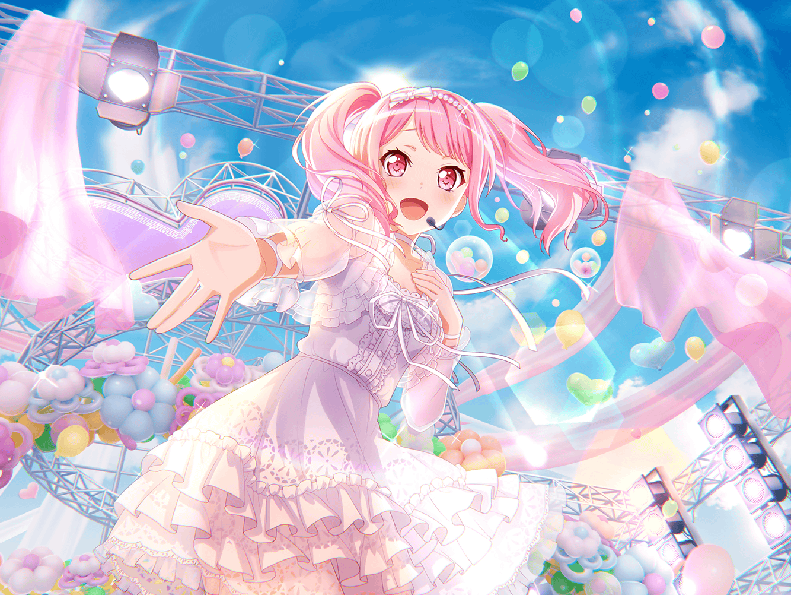

練習スタジオ
彩
ふんふん〜♪
彩
あ、{{userName}}さん！
お疲れ様です！
彩
ずいぶんと上機嫌そうに見える？
えへへ、そうですか～？
彩
実は、この間、Marmaladeっていうアイドルの
解散ライブに行ったんです！
彩
とっても楽しいひと時でした！
あゆみさんとも会えて……
彩
あ、{{userName}}さんには言ってませんでしたよね
彩
Marmaladeって、ご存知ですか？
少し前までいっぱいテレビにも出てたんですけど……
彩
あゆみさんをリーダーとした可愛くも激しい、
柑橘系をイメージしたとっても素敵なアイドルなんです！
彩
私、メンバーのあゆみさんの大ファンなんです！
彩
まさにアイドルの中のアイドルって感じで、
いろんな人に元気を届けてくれる人なんですよ！
彩
実は私、そのあゆみさんに憧れてアイドルを目指したんです
彩
あの頃の私はまだ小学生で……
彩
テレビでやっていた音楽番組で、
あゆみさんの歌声を聞いて……
彩
お世辞にも上手とは言えなかったですけど、それでも
笑顔で、楽しそうに歌うあゆみさんに一目惚れしちゃいました！
彩
それが私のMarmaladeとの出会いでした
彩
何度聞いても心がパーッと晴れ渡るような明るい曲や、
感情が高ぶるような激しい曲……
彩
いろんな曲を聞いて、私はドンドンMarmaladeのことが
好きになっていったんです
彩
でも、何より好きだったのがあゆみさんでした
彩
いつも笑顔で、辛い素振りなんか見せないで、
曲を聞いているみんなに笑いかける……
彩
そんなあゆみさんを見て、
『私もみんなを笑顔にしたい！』って思うようになったんです
彩
みんなを笑顔にできる、誰かに勇気を与えられる
あゆみさんのようなアイドルになりたいって……
彩
それでいま、私はここにいるんです！
彩
{{userName}}さんと出会えたのも、
あゆみさんに憧れてアイドルを目指したからなんですよ
彩
そんなあゆみさんのMarmaladeも、
この間の解散ライブをもって解散……
彩
えへへ……寂しくなっちゃいます
彩
その解散ライブの後、パスパレの皆が取り計らってくれて……
私、あゆみさんに握手してもらったんです
彩
それで、あゆみさんに激励もされちゃいました！
彩
私、嬉しくて嬉しくて……
彩
恥ずかしいんですけど、感激して泣いちゃったんです
彩
だって、憧れのアイドルが目の前にいて、
私のことを励ましてくれているんですよ！
彩
あゆみさんは……Marmaladeは解散しちゃったけど、
私は、いつかあゆみさんを越えるアイドルになりたいです
彩
あの日まで、Marmaladeが解散しちゃうのは
自分の夢が消えちゃうようなものだって思ってました
彩
でも、たとえ解散したとしても、
Marmaladeは私の記憶の中で永遠に消えないんだって
気付かされたんです
彩
だからこそ、記憶の中のMarmaladeを越える……
それが私の目標になったんです
彩
あの時、私があゆみさんに憧れを抱いたように、
今度は私がみんなに憧れられるような素敵なアイドルに……
彩
ううん……みんなに夢を与えられる、
そんな素敵なアイドルになりたいんです！
彩
そのために毎日がんばって練習して、
練習して、練習して練習して練習して！
彩
どんな曲だって、どんなパフォーマンスだって
完璧にこなせるようにならなきゃいけないんです！
彩
私ひとりじゃ無理かもしれないけど、
パスパレのみんなとならきっと超えられると思うんです！
彩
……{{userName}}さんもそう思ってくれてるんですか？
彩
えへへ、ありがとうございます！！
彩
{{userName}}さんがそう言ってくれるなら、
私、きっと大丈夫な気がします！
彩
よーし、がんばるぞー！
彩
Marmaladeを、あゆみさんを越えるまで――
彩
私、絶対に諦めたりなんかしません！